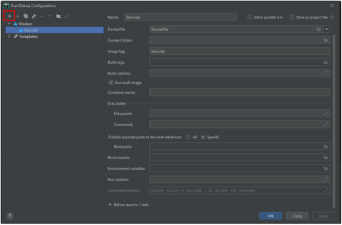

Make sure these prerequisites are met:
Docker is installed. You can install Docker on the various platforms.
You have a stable Internet connection.
Before you start working with , make sure that the Docker plugin is enabled. The plugin is bundled with PyCharm and is activated by default. If the plugin is not activated, enable it on the Plugins page of the Settings/Preferences dialog
Connect your PyCharm project to Github by using the VCS button. Then, click the Add Configuration button in the top right of PyCharm.
Click the + in the top right to add a Docker configuration.
Connect your PyCharm project to Github by using the VCS button. Then, click the Add Configuration button in the top right of PyCharm.
Make sure in your Docker Dashboard under Settings > General that Expose daemon on tcp://(differs) is checked off, and select TCP socket and enter the engine API url.
Ensure to add the Python interpreter, in the button right and select the Docker file.
Hit run and your program should successfully run!
Ensure to add the Python interpreter, in the button right and select the Docker file.
More methods: https://www.jetbrains.com/help/pycharm/docker.html#run-containers